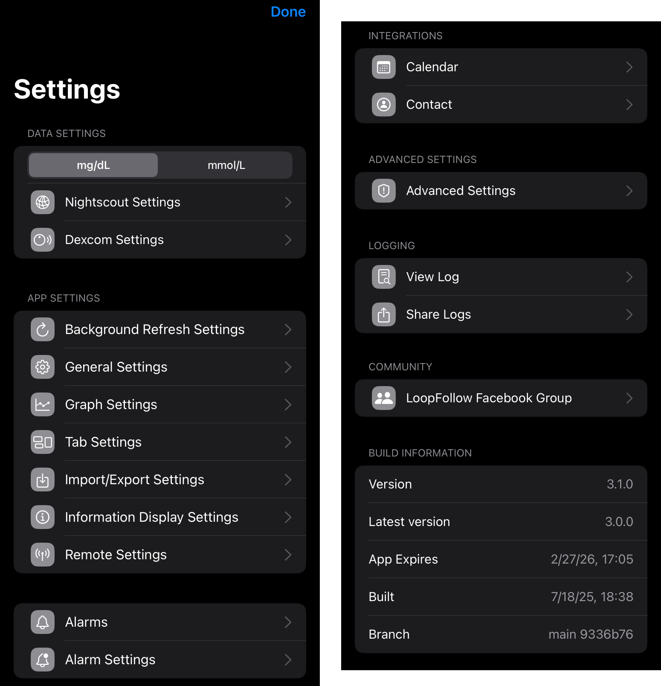
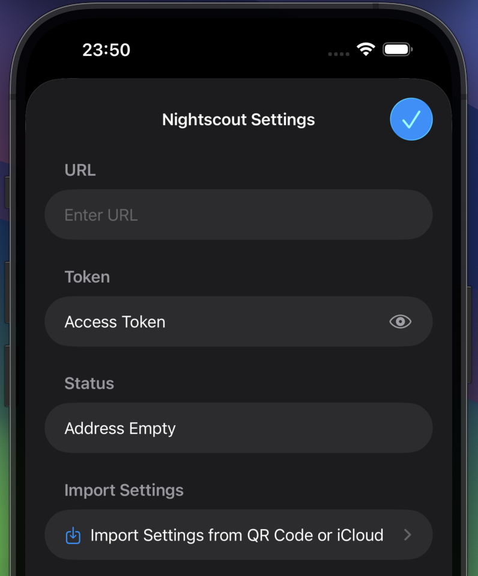
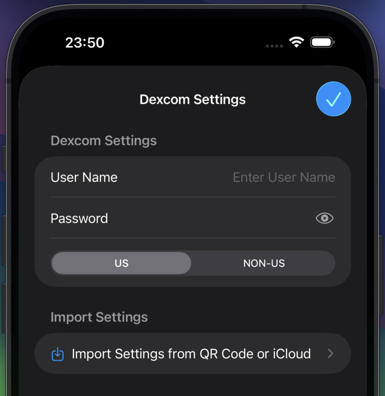
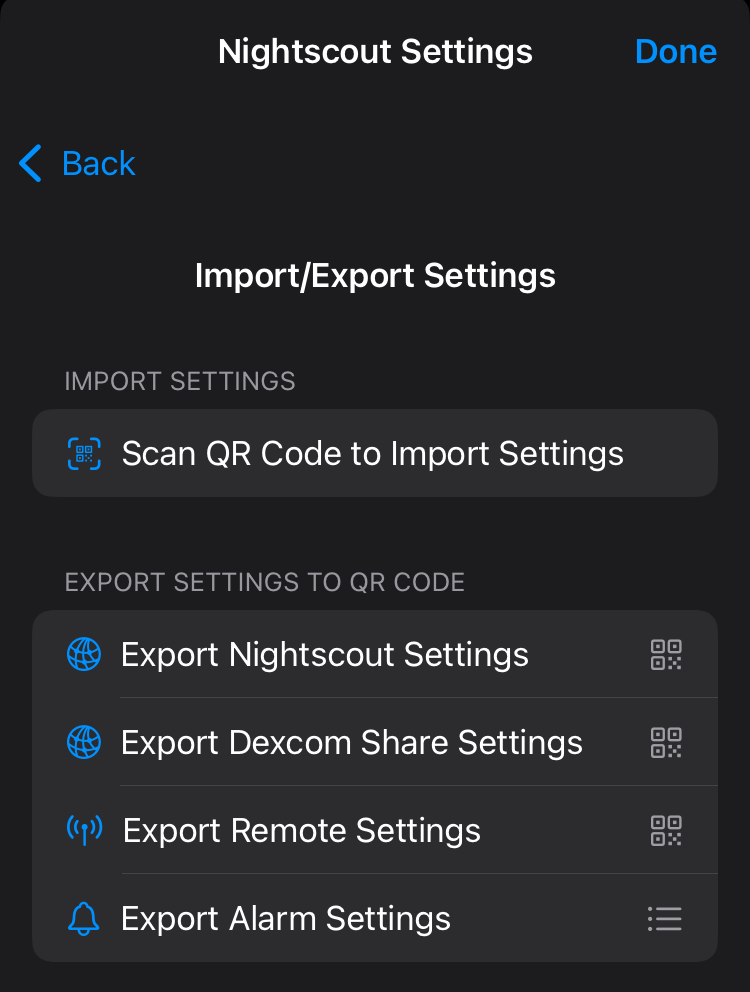
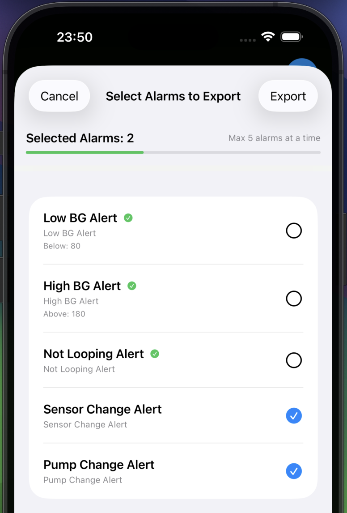
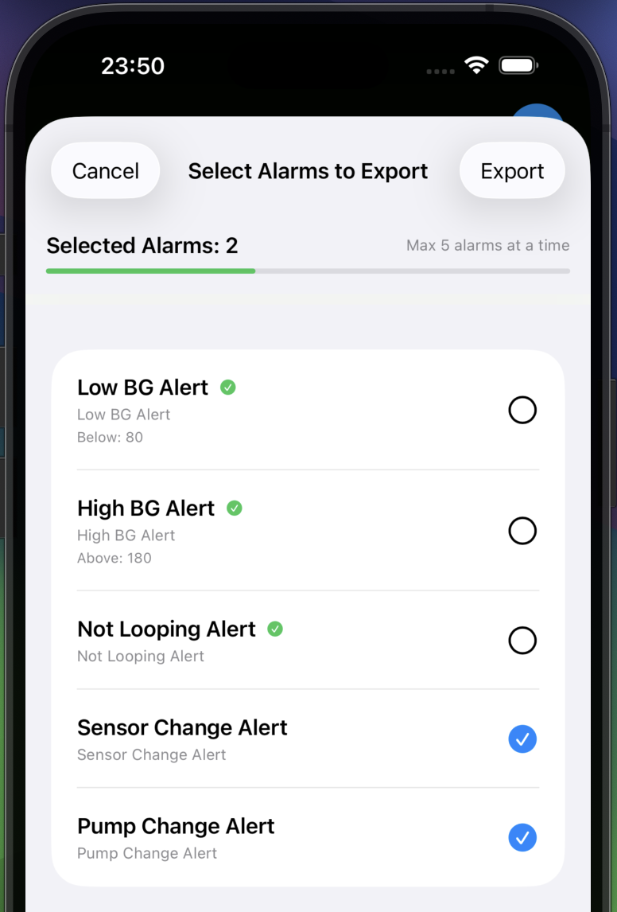

Setup
🚧 Documentation Under Construction 🚧
While this website is under construction, you can find missing information in three places:
- Loop and Learn website: LoopFollow page
- LoopDocs website: Build Other Apps page
- Trio Docs: Loop Follow Remote Control Configuration page
Initial Configuration¶
After you build LoopFollow the first time, you are asked a few questions (your initial choices can always be modified later):
- Calendar Access: if you want to allow LoopFollow to provide real-time updates to carplay using the Calendar, choose Allow Full Access
- Bluetooth Access: if you want to use an expired Dexcom sensor or a spare RileyLink device to keep LoopFollow running in the background while your phone is locked, choose Allow
- Notifications: if you want LoopFollow to notify you for any of your alarms or if LoopFollow stops working, choose Allow
You will then be presented with a home screen as shown below.

Setup Your Data Source¶
Tap on the "Setup Nightscout" button or "Setup Dexcom Share" button to enter your credentials for your preferred service.
Tap on the … More icon, at bottom right, and then choose Settings to get to the Settings screen.
Tab Customization
With version 3.1 and newer, you can modify what icons show up in the tab bar.
If you prefer the Gear/Settings Icon (⚙️) in the tab bar, follow the directions in Toolbar Tab Customization.
Settings Screen¶
The full lists of Settings is shown in the composite graphic below.
- The
Information Display SettingsandRemote Settingsrows are only available with Nightscout Credentials.

LoopFollow Data Source¶
Make sure you have access to the internet when filling out credentials.
You provide LoopFollow with information about the person you are following. At least one of these must be entered:
Add Nightscout¶
The graphic below shows the display when you tap on the Nightscout Settings row. For more information about tokens, keep reading the details below the graphic.
When adding the Nightscout information to monitor, you can copy your Nightscout URL (including the token) from the Admin Tools in Nightscout. When pasted into LoopFollow URL row, the app will automatically extract and fill in both the URL and token.
Setting up a second device
With version 4.3 and newer, You can set up a second device by scanning a QR code from another LoopFollow user. See this section Import/Export Settings.

Nightscout Access
It is possible to have your Nightscout site readable by the world, in which case you do not need to add a token. If you choose to do that, just ignore references to entering the token. The status will show up as OK (Read).
For more information about tokens with Nightscout, refer to Admin Tools in Nightscout.
The type of token depends on the type of remote control desired. The table below indicates the minimum token access for each type of remote control available with LoopFollow. When you enter your credentials, LoopFollow tries to reach the site and then provides the status.
- The Loop Remote Control option requires LoopFollow version 3.2 or newer
- The Trio Remote Control option requires the user be on version 0.5.x or newer of Trio
- Breaking change on 2025-October-06
- Trio 0.6 or newer requires LoopFollow 4.0 or newer
- Trio 0.5.1.28 or older requires LoopFollow 3.2.11 or older
| LoopFollow Remote Type | Minimum Token Access | LoopFollow Status |
|---|---|---|
| None | Read | OK (Read) |
| Loop Remote Control | Read | OK (Read) |
| Trio Remote Control | Read | OK (Read) |
| Nightscout Trio 0.2 or older |
Read & Careportal | OK (Read & Write) |
Add Dexcom¶
The graphic below shows the display when you tap on the Dexcom Settings row.
The Dexcom Share credentials are optional, but can be useful when the Nightscout URL is unavailable.
Setting up a second device
With version 4.3 and newer, You can set up a second device by scanning a QR code from another LoopFollow user. See this section Import/Export Settings.

The Toolbar¶
The toolbar (tab bar) at the bottom of the screen is now configurable for rapid access to the items of your choice. The items that can be selected are:
Home¶
The home screen provides a dashboard of important information.
- Supports Glucose display when Dexcom is available but Nightscout is not
- Supports Information Display from Loop and Trio when Nightscout URL is provided
- Loop & Trio: common features like status, basal, bolus, carbs and eventual glucose forecast
- Loop: Loop specific features like Profile Name, remote control
- Trio: Trio specific features like Autosens, TDD, remote control (with Trio 0.5.x and newer)
Once you’ve configured your settings, your Main screen will look as beautiful as the example below!

App Settings¶
🚧 Documentation Under Construction 🚧
Background Refresh Settings¶
🚧 Documentation Under Construction 🚧
General Settings¶
🚧 Documentation Under Construction 🚧
Graph Settings Settings¶
🚧 Documentation Under Construction 🚧
Tab Settings¶
The user can modify which icons are displayed in the task bar at the bottom of the screen.
See Toolbar Tab Settings for more information.
Import/Export Settings¶
When setting up LoopFollow for another caregiver that will use some or all of the same configuration settings, you can export or scan a QR code to transfer settings between phones.
- Nightscout URL and token
- Dexcom Share Settings
- Remote Configuration Settings
- Alarms
QR Codes Contain Secret Information
Never share a QR code as a screenshot online or send it to someone that is not supposed to have access to your looper's information.
In particular, only share a remote configuration QR code with a caregiver authorized and trained to send remote control commands to the looper's phone!
If in doubt, you can revoke access to the APNS key at https://developer.apple.com/account/resources/authkeys/list
Export Settings¶
To export settings, select one of the options for
- Export Nightscout Settings
- Export Dexcom Share Settings
- Export Remote Settings
- Export Alarm Settings

Export Nightscout Settings, Export Dexcom Share Settings and Export Remote Settings will show a QR code directly that you can scan with the receiving phone.
Export Alarm Settings will let you select up to 5 alarms at a time to export. If you re-enter the export screen after a successful export, it will mark the exported alarms so that you can export more alarms if needed
 

Import Settings¶
On the phone that will receive the settings from the QR code, choose the option: "Scan QR Code to Import Settings"
The first time you import settings with LoopFollow, you will be required to give permission to use the camera. Once permission is granted, hold the importing phone to view the QR code presented by the exporting phone.
When the QR code is accepted, you will see a screen indicating what type of settings is being imported. You will be warned that if you accept the import, your current settings will be overwritten.
Note the QR code for alarms may be slow to import. Just move the phone closer and further away until the code is accepted.

Information Display Settings¶
🚧 Documentation Under Construction 🚧
Rec. Bolus¶
LoopFollow Report of Trio Recommended Dose
It happens. We made a mistake. In versions before 4.0, the Rec. Bolus feature displayed by LoopFollow was a value from the Trio app that was never meant to be used as a recommended bolus.
But the mistake has been fixed and an appropriate Rec. Bolus is back.
Make sure you have these version of code before using the recommended bolus. And pay attention to the warnings about how long since that recommendation was calculated by Trio.
- LoopFollow 4.3 or newer
- Trio 0.6.0.16 or newer
Remember: the Rec. Bolus value is from the last AID app update to Nightscout
Remote Settings¶
Detailed instructions for configuring a phone for remote control are found on the Remote Control Overview page.
If you are configuring a second device and already have one device configured for remote control, be sure to review:
Alarms¶
🚧 Documentation Under Construction 🚧
Alarm Settings¶
🚧 Documentation Under Construction 🚧
Integrations¶
🚧 Documentation Under Construction 🚧
Calendar¶
The calendar entry used to update on the watch in real time, but with iOS 18, the update rate has been throttled. It is still useful for Carplay.
Contact¶
The Contact image trick added with v2.2.8 currently works to provide real-time updates on an Apple Watch.
For more detailed instructions, see Real-Time Watch Updates using Contact
Advanced Settings¶
🚧 Documentation Under Construction 🚧
Allows you to choose what information to download from Nightscout and to modify your graph
- Download Treatments
- Download Prediction
- Graph Basal
- Graph Bolus
- Graph Carbs
- Graph Other Treatments
- BG Update Delay
- Logging options (turn on debug option)
Logging¶
LoopFollow logs activity to a file that can be viewed within the app, and can be shared via email, a Notes file or Facebook messenger if needed. The log can be filtered and searched. This will aid in troubleshooting and diagnostics. Normally, the debug log option is disabled. The log debug option is found in the Advanced Settings section. If the logs seem verbose, check that setting.
View Log¶
🚧 Documentation Under Construction 🚧
Share Logs¶
🚧 Documentation Under Construction 🚧
LoopFollow Facebook Group¶
Tapping on this row takes you to the LoopFollow Facebook Group where you can review posts and ask for assistance.
Build Information¶
This section reports the Version you are using, indicates the Latest Version. In addition, it reports when this app will expire, when it was build and provides details of the branch name and commit identifier.